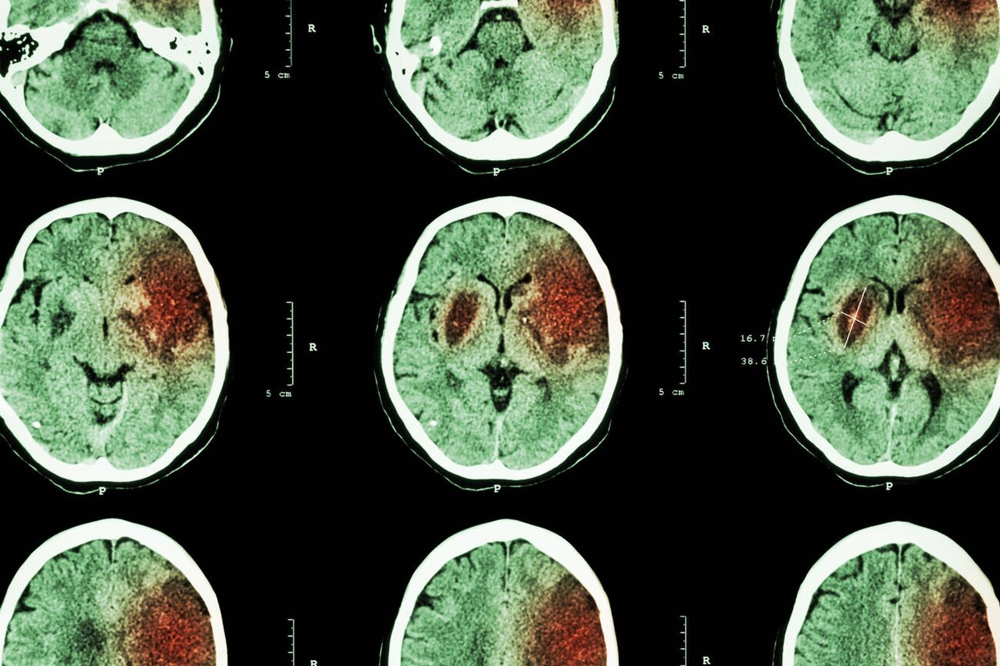

Ficha del catálogo
Ictus isquémico
- Sistema
- Nervioso
- Modalidad
- TC
- Región
- Cráneo
- Dificultad
- Avanzado
Infarto cerebral por oclusión arterial. Es una urgencia dependiente del tiempo: El tratamiento de reperfusión tiene una ventana estrecha, por lo que la rapidez y la precisión del estudio de imagen influyen directamente en el pronóstico del paciente.
Técnica
Tomografía simple inmediata para descartar hemorragia, seguida habitualmente de angiotomografía para localizar la oclusión y estudios de perfusión para valorar el tejido aún recuperable.
Qué observar
- Signos precoces (primeras horas): Pérdida de la diferenciación entre sustancia gris y blanca, borramiento del núcleo lenticular y de la cinta insular
- Signo de la arteria cerebral media hiperdensa, que corresponde al trombo visible dentro del vaso
- Borramiento de los surcos corticales por edema citotóxico incipiente
- Hipodensidad establecida en un territorio vascular definido, que se hace evidente pasadas varias horas
- Transformación hemorrágica del infarto en la evolución
- Efecto de masa progresivo en infartos extensos
Hallazgos
Área hipodensa en territorio vascular con pérdida de la diferenciación corticosubcortical, compatible con infarto cerebral.
Perlas
La tomografía inicial del ictus isquémico puede ser prácticamente normal, y eso no descarta nada: Su objetivo principal en la urgencia es excluir hemorragia para poder decidir si el paciente es candidato a trombólisis. La resonancia con difusión detecta el infarto en minutos, mucho antes que la tomografía.
Diagnóstico diferencial
- Hemorragia intracerebral
- Es una colección hiperdensa desde el primer momento, mientras que el infarto es hipodenso o de densidad normal en las fases iniciales.
- Crisis epiléptica con déficit posterior
- Los hallazgos, cuando existen, no respetan un territorio vascular y suelen ser reversibles, con estudios de perfusión que muestran hiperperfusión en lugar de defecto.
- Encefalitis
- La afectación es cortical y con frecuencia bilateral y asimétrica, con predilección por regiones temporales e insulares, sin ajustarse a un territorio arterial.
- Tumor cerebral
- Presenta efecto de masa y edema desproporcionados para el tiempo de evolución, realza tras el contraste y no respeta límites vasculares.
- Migraña con aura o aura prolongada
- El estudio de imagen es normal o muestra alteraciones que no siguen territorio vascular, con recuperación clínica completa.
- Trombosis venosa cerebral
- Las lesiones aparecen en territorios de drenaje venoso, con frecuencia con componente hemorrágico, y se demuestra el trombo en los senos con estudio venoso.
Simuladores
- Los artefactos de endurecimiento del haz en la fosa posterior enmascaran infartos de tronco y de cerebelo, que son especialmente difíciles de detectar con tomografía.
- Los espacios perivasculares dilatados y la leucoaraiosis crónica son hipodensidades que se confunden con isquemia aguda (su morfología y su estabilidad los diferencian).
- Un infarto antiguo es una hipodensidad bien delimitada, con densidad de líquido y con pérdida de volumen y retracción, a diferencia del agudo, que produce efecto de masa.
- El signo de la arteria cerebral media hiperdensa puede simularse por calcificación de la pared o por hematocrito elevado, por lo que conviene comparar con el lado contrario.
Por modalidad
- TC
- Estudio inicial imprescindible para excluir hemorragia; la angiotomografía localiza la oclusión y los estudios de perfusión estiman el tejido todavía recuperable.
- RM
- La secuencia de difusión detecta el infarto en pocos minutos, mucho antes que la tomografía, y es la técnica más sensible en fosa posterior y en infartos pequeños.
- US
- El Doppler de troncos supraaórticos y el transcraneal identifican la causa arterial y permiten monitorizar la recanalización a pie de cama.
- RX
- Sin papel diagnóstico en el ictus agudo.
Protocolo
Ante la sospecha de ictus se activa un circuito de urgencia que prioriza el tiempo. Se realiza primero una tomografía simple de cráneo con cortes axiales desde el foramen magno hasta el vértex para excluir hemorragia, revisada con ventanas ajustadas que resalten la diferenciación entre sustancia gris y blanca. A continuación se adquiere angiotomografía desde el arco aórtico hasta el vértex para localizar la oclusión y valorar la circulación colateral, y en casos seleccionados un estudio de perfusión con contraste dinámico que estima el núcleo del infarto y el tejido en riesgo. La resonancia con difusión se emplea cuando está disponible y cuando el tiempo de inicio es incierto.
Clasificación
La escala ASPECTS puntúa de diez a cero el territorio de la arteria cerebral media dividiéndolo en diez regiones en la tomografía simple, restando un punto por cada zona con signos precoces de isquemia; una puntuación alta indica poco tejido ya infartado y mejor pronóstico para el tratamiento de reperfusión. La circulación colateral se gradúa en la angiotomografía con escalas que valoran el relleno de los vasos distales al punto de oclusión. La gravedad clínica se mide con la escala NIHSS, y el resultado funcional con la escala de Rankin modificada. Los subtipos etiológicos se agrupan con la clasificación TOAST.
Errores frecuentes
- Concluir que no hay ictus porque la tomografía inicial es normal, cuando eso es precisamente lo esperable en las primeras horas.
- Retrasar la decisión terapéutica buscando signos precoces sutiles, cuando el objetivo urgente del estudio es descartar hemorragia.
- Confundir hipodensidades crónicas con isquemia aguda por no comparar con estudios previos.
- Pasar por alto infartos de fosa posterior, donde los artefactos de la tomografía obligan a considerar resonancia si la sospecha clínica persiste.

ictus isquemia infarto cerebro hipodenso urgencia trombolisis